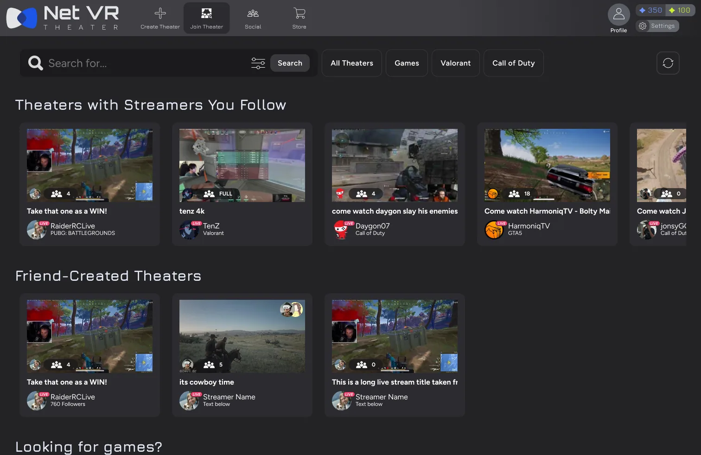

Case study 02 / 06
The Net VR
Virtual theaters where viewers stop being names in a chat and start sharing the stream, with the streamer and with each other.
- Role
- Freelance UX/UI Designer
- Timeline
- Oct 2024 – May 2025
- Outcome
- In-game store that unlocked revenue

At a glance
The problem
In big live streams, chat moves too fast for streamers to engage, and viewers stop feeling like real participants.
The approach
I surveyed The Net VR’s Discord community, turned the results into personas and user stories, then designed the information architecture, wireframes, and design system, testing prototypes remotely with the same community.
The outcome
A design system and high-fidelity prototype refined through remote testing, in-game shop systems that let The Net VR begin generating revenue, and a more unified brand.
Key results
- Revenuein-game shop systems let The Net VR begin earning
- Unifiedbrand assets refreshed into a consistent identity
- Testedprototypes validated remotely with the Discord community
Overview
The answer was presence, not more chat. Theaters let viewers step into a shared virtual space, and the challenge was designing a brand and UI that make that unfamiliar 3D world easy to enter.
Background
There’s a real disconnect between streamers and their audiences. With thousands of messages flooding in at once, streamers struggle to engage meaningfully, and viewers get lost in the crowd: just another name in the chat, not a real participant.
Challenge
How might we define a brand identity, visual language, and UI structure that smoothly guides users into an unfamiliar 3D environment?
Solution
Theaters turn watching into a social, immersive event. Instead of chatting from the sidelines, viewers join a virtual theater where they respond, connect, and engage with the content and fellow audience members in real time.
Research
I went straight to the people already gathered on The Net VR’s Discord, and their answers shaped the priorities.
User Surveys
I surveyed members of The Net VR’s community Discord server with multiple-choice and open-ended questions about their habits, their frustrations, and what they hoped to get from a virtual social streaming platform.
Personas
I looked for patterns in what users had in common, what frustrated them, and the goals they shared, then distilled them into a few personas representing different user groups.
Story-Driven Sprint Planning
I turned research insights into simple user stories, such as “As a gamer who struggles to make friends, I want an easy way to…” The stories made it easier to prioritize features and plan sprints around what would help users most.
Design Process
Guiding people into an unfamiliar 3D space starts with structure. I mapped the information architecture and user flow first, then moved through low-fidelity wireframes to a design system.
Information Architecture
User Flow
Low-Fidelity Wireframes
Design System
Interactive prototype
Click through The Net VR
Explore the real flows in Figma. The prototype loads on demand to keep this page fast.
Testing
Remote tests with the same Discord community showed where people got confused or stuck, turning guesses into specific pain points to fix.
Usability Testing
- Method: I uploaded interactive prototypes to a remote usability testing tool to validate design decisions quickly with real users: the same members of the community Discord server.
- Sample tasks: “Find and join a theater” and “Invite a friend to your theater.”
- Measured: where users clicked, how long each task took, whether they completed it, success rates, and heatmaps.
- Asked: follow-up questions and surveys, which showed where users got confused or stuck.
- Found: one test, for example, showed the navigation bar wasn’t clear.
- Changed: the navigation bar was revised in the next iteration.
High-Fidelity Prototype
Here the community research and remote testing come together in an interactive, high-fidelity prototype of The Net VR that you can click through.
Interactive prototype
Click through The Net VR
Explore the real flows in Figma. The prototype loads on demand to keep this page fast.
Impact
The work reached past usability, into how The Net VR earns and how it looks.
Revenue Generation
I set up in-game shop systems so The Net VR could start generating revenue.
Brand Consistency
I refreshed and streamlined the brand assets into a more unified, consistent visual identity.